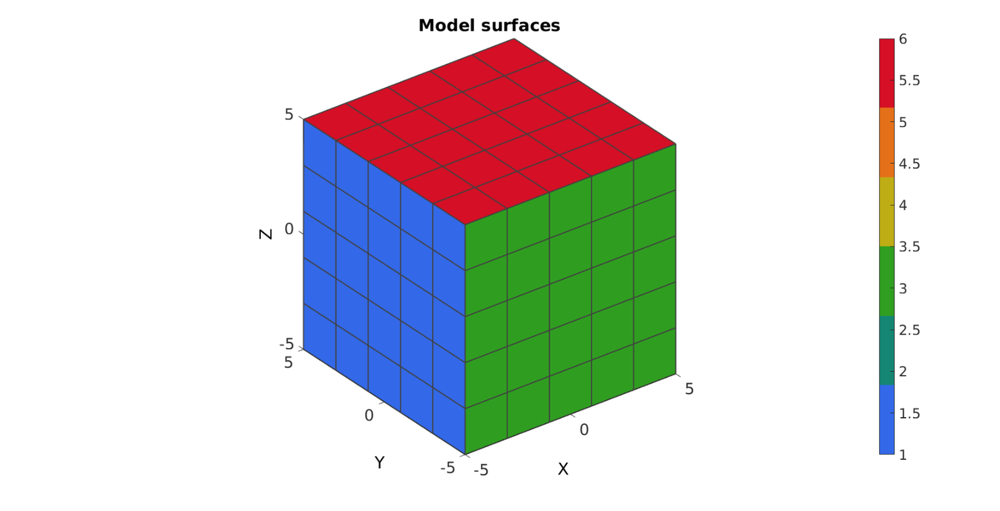
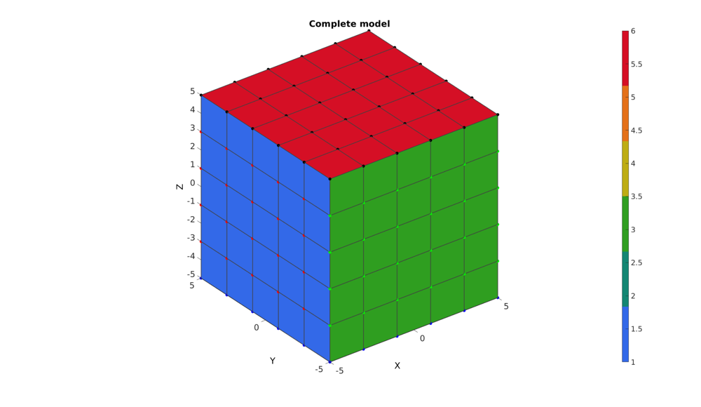
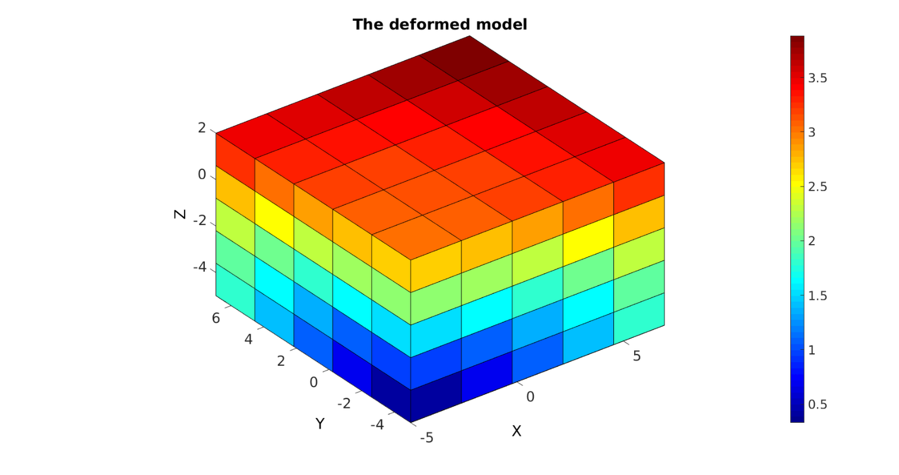
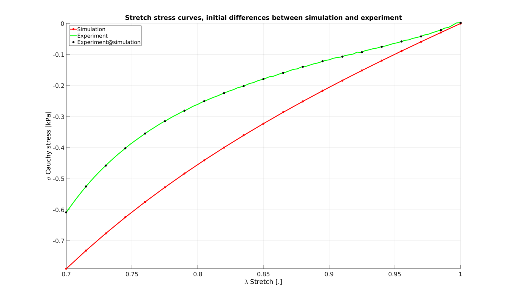
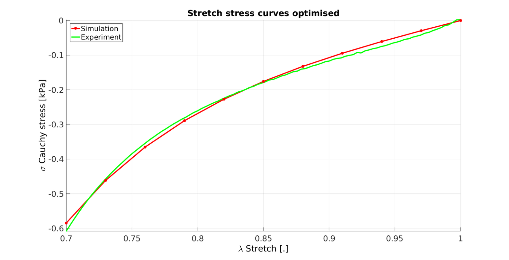

DEMO_FEBio_iFEA_uniaxial_01
Below is a demonstration for: 1) Inverse FEA based material parameter optimisation
Contents
clear; close all; clc;
Plot settings
fontSize=20; faceAlpha1=0.8; faceAlpha2=1; edgeColor=0.25*ones(1,3); edgeWidth=1.5; markerSize=25; lineWidth=3;
Control parameters
% path names defaultFolder = fileparts(fileparts(mfilename('fullpath'))); savePath=fullfile(defaultFolder,'data','temp'); modelNameEnd='iFEA_tempModel'; modelName=fullfile(savePath,modelNameEnd); %Specifying dimensions and number of elements sampleWidth=10; sampleThickness=10; sampleHeight=10; pointSpacings=2*ones(1,3); initialArea=sampleWidth*sampleThickness; numElementsWidth=round(sampleWidth/pointSpacings(1)); numElementsThickness=round(sampleThickness/pointSpacings(2)); numElementsHeight=round(sampleHeight/pointSpacings(3)); stretchLoad=0.7; displacementMagnitude=[0 0 (stretchLoad*sampleHeight)-sampleHeight]; %True material parameter set k_factor=1e2; c1_true=0.000322322142618; m1_true=6; k_true=c1_true*k_factor; %Initial material parameter set c1_ini=c1_true*2; m1_ini=m1_true/2; k_ini=c1_ini*k_factor; P=[c1_ini m1_ini]; % FEA control settings numTimeSteps=10; %Number of time steps desired max_refs=25; %Max reforms max_ups=0; %Set to zero to use full-Newton iterations opt_iter=6; %Optimum number of iterations max_retries=5; %Maximum number of retires dtmin=(1/numTimeSteps)/100; %Minimum time step size dtmax=1/numTimeSteps; %Maximum time step size
SIMULATE EXPERIMENTAL DATA
%Basic set stress_cauchy_exp=[-0.606636933451196;-0.594598753306976;-0.582704841004989;-0.571357405135258;-0.560202987257958;-0.549116632489736;-0.538518403222691;-0.528087294560408;-0.518193056737126;-0.508206114096577;-0.498701595140669;-0.489855637164223;-0.480813541456146;-0.472386398119889;-0.463619435755875;-0.455563887366101;-0.447492483369391;-0.439573886089611;-0.432050298442763;-0.424607647116797;-0.416804189884078;-0.410387298955262;-0.402977977822379;-0.396396657790034;-0.389210485373911;-0.383000553144204;-0.376675743693335;-0.370668858911072;-0.364731155035823;-0.358344772157269;-0.352790185960043;-0.346625957990168;-0.340956058045645;-0.335892515500584;-0.330212348100342;-0.325153422018813;-0.319890421672462;-0.315056500840712;-0.310859570288282;-0.305563240532117;-0.301114864342368;-0.295807178919732;-0.291944875824590;-0.287799721606394;-0.282704271932097;-0.279560319546267;-0.273953092186896;-0.271205596632553;-0.266019580975468;-0.261921529885230;-0.259473236771767;-0.254229845700605;-0.251227010966108;-0.246731599709182;-0.243347463269765;-0.240668206009318;-0.235904450179518;-0.233443491646300;-0.229240342796589;-0.226328455230997;-0.222574693739149;-0.219690552720043;-0.215908110296801;-0.213462994691799;-0.209402262394587;-0.206143135063048;-0.204259473767410;-0.200271046174199;-0.198497342254049;-0.194018107075590;-0.190682588685824;-0.190178278993820;-0.184939186637633;-0.184540226448861;-0.179325520197559;-0.177302998325867;-0.174896317893232;-0.170891038492450;-0.170506389072493;-0.165503062182587;-0.164964944739691;-0.160899776454826;-0.158388071874370;-0.156732253086585;-0.152865980799647;-0.151886036142296;-0.147064551962397;-0.146636586148680;-0.143247545748075;-0.139910407552933;-0.139643630040939;-0.135175245456319;-0.134411814767664;-0.131535143940800;-0.127943005303573;-0.127499404828055;-0.123718865018965;-0.123269655840332;-0.118450118919226;-0.117869603457104;-0.114259063948408;-0.111845005007273;-0.110782903827826;-0.106815200840467;-0.108112322079051;-0.103218831561054;-0.103859461792770;-0.100330051927225;-0.0988503888488038;-0.0984110683795259;-0.0920373613042230;-0.0944900398318279;-0.0908054642234128;-0.0873647791392896;-0.0857302637239363;-0.0832930518728098;-0.0811377337125286;-0.0801419455213994;-0.0773146108678843;-0.0750524119380378;-0.0737660915109812;-0.0711063097725948;-0.0689106003957611;-0.0662015603338655;-0.0637907034798034;-0.0622238776663924;-0.0587129121234732;-0.0590737570248270;-0.0542752113831988;-0.0539468997803651;-0.0504474583208646;-0.0479308792263506;-0.0474997497002284;-0.0422136232687380;-0.0419340474843669;-0.0383206523546593;-0.0353822402853126;-0.0342394575632298;-0.0296092241247699;-0.0290386117855990;-0.0252785740102147;-0.0211393477778685;-0.0210232271972257;-0.0149625128602809;-0.0150455267730763;-0.00925788965002460;-0.00559693887219605;-0.00235368730112040;0.00439939147625970;0.00280776088737496]; stretch_exp=[0.700330019000000;0.702340563275168;0.704351107550336;0.706361651825503;0.708372196100671;0.710382740375839;0.712393284651007;0.714403828926175;0.716414373201342;0.718424917476510;0.720435461751678;0.722446006026846;0.724456550302013;0.726467094577181;0.728477638852349;0.730488183127517;0.732498727402685;0.734509271677852;0.736519815953020;0.738530360228188;0.740540904503356;0.742551448778524;0.744561993053691;0.746572537328859;0.748583081604027;0.750593625879195;0.752604170154362;0.754614714429530;0.756625258704698;0.758635802979866;0.760646347255034;0.762656891530201;0.764667435805369;0.766677980080537;0.768688524355705;0.770699068630873;0.772709612906040;0.774720157181208;0.776730701456376;0.778741245731544;0.780751790006711;0.782762334281879;0.784772878557047;0.786783422832215;0.788793967107383;0.790804511382550;0.792815055657718;0.794825599932886;0.796836144208054;0.798846688483222;0.800857232758389;0.802867777033557;0.804878321308725;0.806888865583893;0.808899409859060;0.810909954134228;0.812920498409396;0.814931042684564;0.816941586959732;0.818952131234899;0.820962675510067;0.822973219785235;0.824983764060403;0.826994308335570;0.829004852610738;0.831015396885906;0.833025941161074;0.835036485436242;0.837047029711409;0.839057573986577;0.841068118261745;0.843078662536913;0.845089206812081;0.847099751087248;0.849110295362416;0.851120839637584;0.853131383912752;0.855141928187920;0.857152472463087;0.859163016738255;0.861173561013423;0.863184105288591;0.865194649563758;0.867205193838926;0.869215738114094;0.871226282389262;0.873236826664430;0.875247370939597;0.877257915214765;0.879268459489933;0.881279003765101;0.883289548040269;0.885300092315436;0.887310636590604;0.889321180865772;0.891331725140940;0.893342269416107;0.895352813691275;0.897363357966443;0.899373902241611;0.901384446516779;0.903394990791946;0.905405535067114;0.907416079342282;0.909426623617450;0.911437167892617;0.913447712167785;0.915458256442953;0.917468800718121;0.919479344993289;0.921489889268456;0.923500433543624;0.925510977818792;0.927521522093960;0.929532066369128;0.931542610644295;0.933553154919463;0.935563699194631;0.937574243469799;0.939584787744967;0.941595332020134;0.943605876295302;0.945616420570470;0.947626964845638;0.949637509120805;0.951648053395973;0.953658597671141;0.955669141946309;0.957679686221477;0.959690230496644;0.961700774771812;0.963711319046980;0.965721863322148;0.967732407597316;0.969742951872483;0.971753496147651;0.973764040422819;0.975774584697987;0.977785128973154;0.979795673248322;0.981806217523490;0.983816761798658;0.985827306073826;0.987837850348993;0.989848394624161;0.991858938899329;0.993869483174497;0.995880027449664;0.997890571724832;0.999901116000000]; %Interpolate to higher sampling n=100; stretch_exp_n=linspace(1,stretchLoad,n); stress_cauchy_exp_n = interp1(stretch_exp,stress_cauchy_exp,stretch_exp_n,'pchip'); %Override variables stress_cauchy_exp=stress_cauchy_exp_n; stretch_exp=stretch_exp_n; %Add noise stdNoise=0.01; %Standard deviation in units of stress stress_cauchy_exp_n=stress_cauchy_exp_n+stdNoise.*randn(size(stress_cauchy_exp_n));
CREATING MESHED BOX
%Create box 1 boxDim=[sampleWidth sampleThickness sampleHeight]; %Dimensions boxEl=[numElementsWidth numElementsThickness numElementsHeight]; %Number of elements [box1]=hexMeshBox(boxDim,boxEl); E=box1.E; V=box1.V; Fb=box1.Fb; faceBoundaryMarker=box1.faceBoundaryMarker; X=V(:,1); Y=V(:,2); Z=V(:,3); VE=[mean(X(E),2) mean(Y(E),2) mean(Z(E),2)]; elementMaterialIndices=ones(size(E,1),1);
% Plotting boundary surfaces hf=cFigure; title('Model surfaces','FontSize',fontSize); xlabel('X','FontSize',fontSize); ylabel('Y','FontSize',fontSize); zlabel('Z','FontSize',fontSize); hold on; patch('Faces',Fb,'Vertices',V,'FaceColor','flat','CData',faceBoundaryMarker,'FaceAlpha',faceAlpha2,'lineWidth',edgeWidth,'edgeColor',edgeColor); colormap(gjet(6)); colorbar; set(gca,'FontSize',fontSize); view(3); axis tight; axis equal; grid on; drawnow;
DEFINE BC's
%Define supported node sets logicFace=faceBoundaryMarker==1; Fr=Fb(logicFace,:); bcSupportList_X=unique(Fr(:)); logicFace=faceBoundaryMarker==3; Fr=Fb(logicFace,:); bcSupportList_Y=unique(Fr(:)); logicFace=faceBoundaryMarker==5; Fr=Fb(logicFace,:); bcSupportList_Z=unique(Fr(:)); %Prescribed displacement nodes logicPrescribe=faceBoundaryMarker==6; Fr=Fb(logicPrescribe,:); bcPrescribeList=unique(Fr(:)); bcPrescribeMagnitudes=displacementMagnitude(ones(1,numel(bcPrescribeList)),:);
Visualize BC's
hf=cFigure; title('Complete model','FontSize',fontSize); xlabel('X','FontSize',fontSize); ylabel('Y','FontSize',fontSize); zlabel('Z','FontSize',fontSize); hold on; patch('Faces',Fb,'Vertices',V,'FaceColor','flat','CData',faceBoundaryMarker,'FaceAlpha',faceAlpha2,'lineWidth',edgeWidth,'edgeColor',edgeColor); plotV(V(bcSupportList_X,:),'r.','MarkerSize',markerSize); plotV(V(bcSupportList_Y,:),'g.','MarkerSize',markerSize); plotV(V(bcSupportList_Z,:),'b.','MarkerSize',markerSize); plotV(V(bcPrescribeList,:),'k.','MarkerSize',markerSize); set(gca,'FontSize',fontSize); colormap(gjet(6)); colorbar; set(gca,'FontSize',fontSize); view(3); axis tight; axis equal; grid on; drawnow;
CONSTRUCTING FEB MODEL
FEB_struct.febio_spec.version='2.0'; FEB_struct.Module.Type='solid'; % Defining file names FEB_struct.run_filename=[modelName,'.feb']; %FEB file name FEB_struct.run_logname=[modelName,'.txt']; %FEBio log file name %Geometry section FEB_struct.Geometry.Nodes=V; FEB_struct.Geometry.Elements={E}; %The element sets FEB_struct.Geometry.ElementType={'hex8'}; %The element types FEB_struct.Geometry.ElementMat={elementMaterialIndices}; FEB_struct.Geometry.ElementsPartName={'Block'}; %Material section %Material 1 uncoupled hyperelastic FEB_struct.Materials{1}.Type='Ogden'; FEB_struct.Materials{1}.Name='Block_material'; FEB_struct.Materials{1}.Properties={'c1','m1','c2','m2','k'}; FEB_struct.Materials{1}.Values={c1_ini,m1_ini,c1_ini,-m1_ini,k_ini}; %Control section FEB_struct.Control.AnalysisType='static'; FEB_struct.Control.Properties={'time_steps','step_size',... 'max_refs','max_ups',... 'dtol','etol','rtol','lstol'}; FEB_struct.Control.Values={numTimeSteps,1/numTimeSteps,... max_refs,max_ups,... 0.001,0.01,0,0.9}; FEB_struct.Control.TimeStepperProperties={'dtmin','dtmax','max_retries','opt_iter'}; FEB_struct.Control.TimeStepperValues={dtmin,dtmax,max_retries,opt_iter}; %Defining node sets FEB_struct.Geometry.NodeSet{1}.Set=bcSupportList_X; FEB_struct.Geometry.NodeSet{1}.Name='bcSupportList_X'; FEB_struct.Geometry.NodeSet{2}.Set=bcSupportList_Y; FEB_struct.Geometry.NodeSet{2}.Name='bcSupportList_Y'; FEB_struct.Geometry.NodeSet{3}.Set=bcSupportList_Z; FEB_struct.Geometry.NodeSet{3}.Name='bcSupportList_Z'; % FEB_struct.Geometry.NodeSet{4}.Set=bcPrescribeList; % FEB_struct.Geometry.NodeSet{4}.Name='bcPrescribeList'; %Adding BC information FEB_struct.Boundary.Fix{1}.bc='x'; FEB_struct.Boundary.Fix{1}.SetName=FEB_struct.Geometry.NodeSet{1}.Name; FEB_struct.Boundary.Fix{2}.bc='y'; FEB_struct.Boundary.Fix{2}.SetName=FEB_struct.Geometry.NodeSet{2}.Name; FEB_struct.Boundary.Fix{3}.bc='z'; FEB_struct.Boundary.Fix{3}.SetName=FEB_struct.Geometry.NodeSet{3}.Name; %Prescribed BC's FEB_struct.Boundary.Prescribe{1}.Set=bcPrescribeList; FEB_struct.Boundary.Prescribe{1}.bc='z'; FEB_struct.Boundary.Prescribe{1}.lc=1; FEB_struct.Boundary.Prescribe{1}.nodeScale=displacementMagnitude(ones(numel(bcPrescribeList),1),3); FEB_struct.Boundary.Prescribe{1}.Type='relative'; %Load curves FEB_struct.LoadData.LoadCurves.id=1; FEB_struct.LoadData.LoadCurves.type={'linear'}; FEB_struct.LoadData.LoadCurves.loadPoints={[0 0;1 1;]}; %Adding output requests FEB_struct.Output.VarTypes={'displacement','stress','relative volume'}; %Specify log file output run_disp_output_name=[modelNameEnd,'_node_out.txt']; run_force_output_name=[modelNameEnd,'_force_out.txt']; FEB_struct.run_output_names={run_disp_output_name,run_force_output_name}; FEB_struct.output_types={'node_data','node_data'}; FEB_struct.data_types={'ux;uy;uz','Rx;Ry;Rz'};
SAVING .FEB FILE
FEB_struct.disp_opt=0; %Display waitbars option
febStruct2febFile(FEB_struct);
Warning: febStruct2febFile is depricated and will be removed in future releases. Update your codes to use febioStruct2xml, see HELP_febioStruct2xml (furthermore febio_spec version 2.5 is recommended) %%%%%%%%%%%%%%%%%%%%%%%%%%%%%%%%%%%%%%%%%%%%% --- Writing FEBio XML object --- 14-Feb-2018 14:44:14 Using febio_spec: 2.0 Adding Module level Adding Control level Adding Material level Adding Geometry level ----> Adding node field ----> Adding element field ----> Adding hex8 element entries.... ----> Adding NodeSet field Adding Boundary level ----> Defining fix type boundary conditions ----> Defining prescribe type boundary conditions Adding LoadData level ----> Defining load curves Adding Output level ----> Adding plotfile field ----> Adding logfile field Writing .feb file --- Done --- 14-Feb-2018 14:44:14
RUNNING FEBIO JOB
% FEBioRunStruct.FEBioPath='C:\Program Files\febio2-2.2.6\bin\febio2.exe'; FEBioRunStruct.run_filename=FEB_struct.run_filename; FEBioRunStruct.run_logname=FEB_struct.run_logname; FEBioRunStruct.disp_on=1; FEBioRunStruct.disp_log_on=1; FEBioRunStruct.runMode='external';%'internal'; FEBioRunStruct.t_check=0.25; %Time for checking log file (dont set too small) FEBioRunStruct.maxtpi=1e99; %Max analysis time FEBioRunStruct.maxLogCheckTime=5; %Max log file checking time FEBioRunStruct.cleanUpFileList=FEB_struct.run_output_names; %Files to remove prior to starting each job. [runFlag]=runMonitorFEBio(FEBioRunStruct);%START FEBio NOW!!!!!!!!
%%%%%%%%%%%%%%%%%%%%%%%%%%%%%%%%%%%%%%%%%%%%% --- STARTING FEBIO JOB --- 14-Feb-2018 14:44:14 Waiting for log file... Proceeding to check log file...14-Feb-2018 14:44:15 ------- converged at time : 0.1 ------- converged at time : 0.2 ------- converged at time : 0.3 ------- converged at time : 0.4 ------- converged at time : 0.5 ------- converged at time : 0.6 ------- converged at time : 0.7 ------- converged at time : 0.8 ------- converged at time : 0.9 ------- converged at time : 1 --- Done --- 14-Feb-2018 14:44:15
IMPORTING NODAL DISPLACEMENT RESULTS
Importing nodal displacements from a log file
[~, N_disp_mat,~]=importFEBio_logfile(FEB_struct.run_output_names{1}); %Nodal displacements
DN=N_disp_mat(:,2:end,end); %Final nodal displacements
CREATING NODE SET IN DEFORMED STATE
V_def=V+DN; DN_magnitude=sqrt(sum(DN.^2,2));
Plotting the deformed model
[CF]=vertexToFaceMeasure(Fb,DN_magnitude); hf1=cFigure; title('The deformed model','FontSize',fontSize); xlabel('X','FontSize',fontSize); ylabel('Y','FontSize',fontSize); zlabel('Z','FontSize',fontSize); hold on; hps=patch('Faces',Fb,'Vertices',V_def,'FaceColor','flat','CData',CF); view(3); axis tight; axis equal; grid on; colormap gjet; colorbar; % camlight headlight; set(gca,'FontSize',fontSize); drawnow;
IMPORTING NODAL FORCES
Importing nodal forces from a log file
[time_mat, N_force_mat,~]=importFEBio_logfile(FEB_struct.run_output_names{2}); %Nodal displacements
FZ_set=N_force_mat(bcPrescribeList,end,:); %Final nodal displacements
%Get Z forces FZ=sum(N_force_mat(bcPrescribeList,end,:),1); FZ=[0; FZ(:)]; %Mean top surface nodal forces %Derive applied stretch DZ_set=N_disp_mat(bcPrescribeList,end,:); %Final nodal displacements DZ_set=mean(DZ_set,1); stretch_sim=(DZ_set+sampleHeight)./sampleHeight; stretch_sim=[1; stretch_sim(:)]; %Derive simulated Cauchy stress (alternatively import stress and take the mean) currentArea=initialArea./stretch_sim; stress_cauchy_sim=FZ./currentArea; %Cauchy stress stress_cauchy_sim=stress_cauchy_sim.*1e3; %Scale to kPa %Interpolate experiment onto simulated points stress_cauchy_exp_sim = interp1(stretch_exp,stress_cauchy_exp,stretch_sim,'pchip');
hf1=cFigure; title('Stretch stress curves, initial differences between simulation and experiment','FontSize',fontSize); xlabel('\lambda Stretch [.]','FontSize',fontSize); ylabel('\sigma Cauchy stress [kPa]','FontSize',fontSize); zlabel('Z','FontSize',fontSize); hold on; H(1)=plot(stretch_sim,stress_cauchy_sim,'r.-','lineWidth',lineWidth,'markerSize',markerSize); H(2)=plot(stretch_exp,stress_cauchy_exp,'g-','lineWidth',lineWidth); H(3)=plot(stretch_sim,stress_cauchy_exp_sim,'k.','markerSize',markerSize); legend(H,{'Simulation','Experiment','Experiment@simulation'},'Location','northwest'); view(2); axis tight; grid on; set(gca,'FontSize',fontSize); drawnow;
CREATE STRUCTURES FOR OPTIMISATION
mat_struct.id=1;
mat_struct.par_names={'c1','m1','c2','m2','k'};
mat_struct.par_values={c1_ini m1_ini c1_ini -m1_ini k_ini};
% docNode=set_mat_par_FEBIO(FEB_struct.run_filename,FEB_struct.run_filename,{mat_struct});
FEBioRunStruct.disp_on=0;
FEBioRunStruct.disp_log_on=0;
%What should be known to the objective function:
objectiveStruct.bcPrescribeList=bcPrescribeList;
objectiveStruct.stretch_exp=stretch_exp;
objectiveStruct.stress_cauchy_exp=stress_cauchy_exp;
objectiveStruct.FEBioRunStruct=FEBioRunStruct;
objectiveStruct.FEB_struct=FEB_struct;
objectiveStruct.mat_struct=mat_struct;
objectiveStruct.k_factor=k_factor;
objectiveStruct.initialArea=initialArea;
objectiveStruct.sampleHeight=sampleHeight;
objectiveStruct.parNormFactors=P; %This will normalize the parameters to ones(size(P))
objectiveStruct.Pb_struct.xx_c=P; %Parameter constraining centre
objectiveStruct.Pb_struct.xxlim=[[P(1)/100 2]' [P(1)*100 50]']; %Parameter bounds
%Optimisation settings
maxNumberIterations=45; %Maximum number of optimization iterations
maxNumberFunctionEvaluations=maxNumberIterations*10; %Maximum number of function evaluations, N.B. multiple evaluations are used per iteration
functionTolerance=1e-2; %Tolerance on objective function value
parameterTolerance=1e-2; %Tolerance on parameter variation
displayTypeIterations='iter';
objectiveStruct.method=2;
%File names of output files
objectiveStruct.run_output_names=FEB_struct.run_output_names;
STARTING OPTIMISATION
Pn=P./objectiveStruct.parNormFactors; switch objectiveStruct.method case 1 %fminsearch and Nelder-Mead OPT_options=optimset('fminsearch'); % 'Nelder-Mead simplex direct search' OPT_options = optimset(OPT_options,'MaxFunEvals',maxNumberFunctionEvaluations,... 'MaxIter',maxNumberIterations,... 'TolFun',functionTolerance,... 'TolX',parameterTolerance,... 'Display',displayTypeIterations,... 'FinDiffRelStep',1e-3,... 'DiffMaxChange',0.5); [Pn_opt,OPT_out.fval,OPT_out.exitflag,OPT_out.output]= fminsearch(@(Pn) obj_DEMO_FEBio_iFEA_uniaxial_01(Pn,objectiveStruct),Pn,OPT_options); case 2 %lsqnonlin and Levenberg-Marquardt OPT_options = optimoptions(@lsqnonlin,'Algorithm','levenberg-marquardt'); OPT_options = optimoptions(OPT_options,'MaxFunEvals',maxNumberFunctionEvaluations,... 'MaxIter',maxNumberIterations,... 'TolFun',functionTolerance,... 'TolX',parameterTolerance,... 'Display',displayTypeIterations,... 'FinDiffRelStep',1e-3,... 'DiffMaxChange',0.5); [Pn_opt,OPT_out.resnorm,OPT_out.residual]= lsqnonlin(@(Pn) obj_DEMO_FEBio_iFEA_uniaxial_01(Pn,objectiveStruct),Pn,[],[],OPT_options); end
SETTING MATERIAL PARAMETERS...
Proposed (norm.): 1.0000000000000000e+00 1.0000000000000000e+00
Proposed : 6.4464428523599996e-04 3.0000000000000000e+00
Set (constr.) : 6.4464428523599996e-04 3.0000000000000000e+00
Done
SETTING MATERIAL PARAMETERS...
Proposed (norm.): 1.0009999999999999e+00 1.0000000000000000e+00
Proposed : 6.4528892952123585e-04 3.0000000000000000e+00
Set (constr.) : 6.4584027880999404e-04 3.0000000000000000e+00
Done
SETTING MATERIAL PARAMETERS...
Proposed (norm.): 1.0000000000000000e+00 1.0009999999999999e+00
Proposed : 6.4464428523599996e-04 3.0029999999999997e+00
Set (constr.) : 6.4464428523599996e-04 3.0055662191396384e+00
Done
First-Order Norm of
Iteration Func-count Residual optimality Lambda step
0 3 2.27203 11.4 0.01
SETTING MATERIAL PARAMETERS...
Proposed (norm.): 7.3038332166986297e-01 1.4570165659432903e+00
Proposed : 4.7083743434616428e-04 4.3710496978298714e+00
Set (constr.) : 2.8574271850998617e-04 5.6330970207030990e+00
Done
SETTING MATERIAL PARAMETERS...
Proposed (norm.): 7.3138332166986297e-01 1.4570165659432903e+00
Proposed : 4.7148207863140023e-04 4.3710496978298714e+00
Set (constr.) : 2.8692230774252705e-04 5.6330970207030990e+00
Done
SETTING MATERIAL PARAMETERS...
Proposed (norm.): 7.3038332166986297e-01 1.4584735825092336e+00
Proposed : 4.7083743434616428e-04 4.3754207475277012e+00
Set (constr.) : 2.8574271850998617e-04 5.6417551286824423e+00
Done
1 6 0.171597 3.75 0.001 0.53062
SETTING MATERIAL PARAMETERS...
Proposed (norm.): 7.6139883366763739e-01 1.5353733351441416e+00
Proposed : 4.9083140690919813e-04 4.6061200054324249e+00
Set (constr.) : 3.2373474277577134e-04 6.1008598862119570e+00
Done
SETTING MATERIAL PARAMETERS...
Proposed (norm.): 7.6239883366763739e-01 1.5353733351441416e+00
Proposed : 4.9147605119443413e-04 4.6061200054324249e+00
Set (constr.) : 3.2500410838897200e-04 6.1008598862119570e+00
Done
SETTING MATERIAL PARAMETERS...
Proposed (norm.): 7.6139883366763739e-01 1.5369087084792858e+00
Proposed : 4.9083140690919813e-04 4.6107261254378571e+00
Set (constr.) : 3.2373474277577134e-04 6.1100683741142472e+00
Done
2 9 0.0101784 0.365 0.0001 0.0842719
SETTING MATERIAL PARAMETERS...
Proposed (norm.): 7.6000527494267966e-01 1.5246772323604867e+00
Proposed : 4.8993305724101337e-04 4.5740316970814598e+00
Set (constr.) : 3.2197004419845721e-04 6.0367544463647711e+00
Done
SETTING MATERIAL PARAMETERS...
Proposed (norm.): 7.6100527494267967e-01 1.5246772323604867e+00
Proposed : 4.9057770152624938e-04 4.5740316970814598e+00
Set (constr.) : 3.2323586734418042e-04 6.0367544463647711e+00
Done
SETTING MATERIAL PARAMETERS...
Proposed (norm.): 7.6000527494267966e-01 1.5262019095928472e+00
Proposed : 4.8993305724101337e-04 4.5786057287785411e+00
Set (constr.) : 3.2197004419845721e-04 6.0458875389960083e+00
Done
3 12 0.00893876 0.00368 1e-05 0.0107865
Local minimum possible.
lsqnonlin stopped because the relative size of the current step is less than
the selected value of the step size tolerance.
[Fopt,OPT_stats_out]=obj_DEMO_FEBio_iFEA_uniaxial_01(Pn_opt,objectiveStruct);
% type(fullfile(fileparts(filePath),'obj_DEMO_FEBio_iFEA_uniaxial_01'))
SETTING MATERIAL PARAMETERS... Proposed (norm.): 7.6000527494267966e-01 1.5246772323604867e+00 Proposed : 4.8993305724101337e-04 4.5740316970814598e+00 Set (constr.) : 3.2197004419845721e-04 6.0367544463647711e+00 Done
Unnormalize and constrain parameters
P_opt=Pn_opt.*objectiveStruct.parNormFactors; %Scale back, undo normalization %Constraining parameters for q=1:1:numel(P_opt); [P_opt(q)]=parLimNat(objectiveStruct.Pb_struct.xx_c(q),objectiveStruct.Pb_struct.xxlim(q,:),P_opt(q)); end disp_text=sprintf('%6.16e,',P_opt); disp_text=disp_text(1:end-1); disp(['P_opt=',disp_text]);
P_opt=3.2197004419845721e-04,6.0367544463647711e+00
hf1=cFigure; title('Stretch stress curves optimised','FontSize',fontSize); xlabel('\lambda Stretch [.]','FontSize',fontSize); ylabel('\sigma Cauchy stress [kPa]','FontSize',fontSize); zlabel('Z','FontSize',fontSize); hold on; Hn(1)=plot(OPT_stats_out.stretch_sim,OPT_stats_out.stress_cauchy_sim,'r.-','lineWidth',lineWidth,'markerSize',markerSize); Hn(2)=plot(stretch_exp,stress_cauchy_exp,'g-','lineWidth',lineWidth); legend(Hn,{'Simulation','Experiment'},'Location','northwest'); view(2); axis tight; grid on; set(gca,'FontSize',fontSize); drawnow;

GIBBON www.gibboncode.org
Kevin Mattheus Moerman, gibbon.toolbox@gmail.com
GIBBON footer text
License: https://github.com/gibbonCode/GIBBON/blob/master/LICENSE
GIBBON: The Geometry and Image-based Bioengineering add-On. A toolbox for image segmentation, image-based modeling, meshing, and finite element analysis.
Copyright (C) 2018 Kevin Mattheus Moerman
This program is free software: you can redistribute it and/or modify it under the terms of the GNU General Public License as published by the Free Software Foundation, either version 3 of the License, or (at your option) any later version.
This program is distributed in the hope that it will be useful, but WITHOUT ANY WARRANTY; without even the implied warranty of MERCHANTABILITY or FITNESS FOR A PARTICULAR PURPOSE. See the GNU General Public License for more details.
You should have received a copy of the GNU General Public License along with this program. If not, see http://www.gnu.org/licenses/.